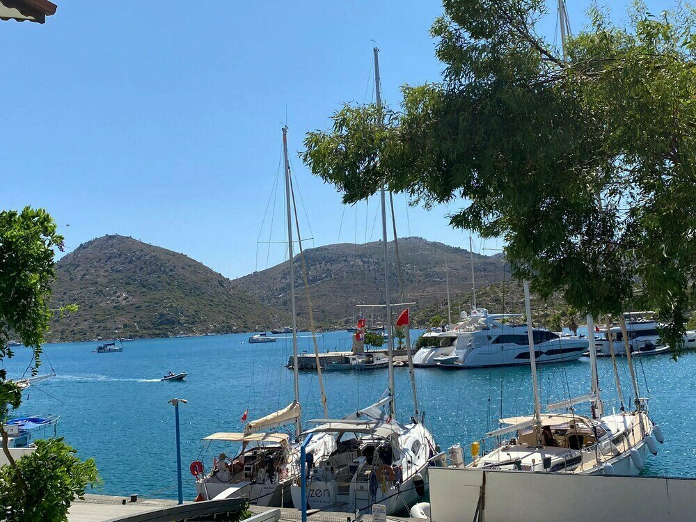
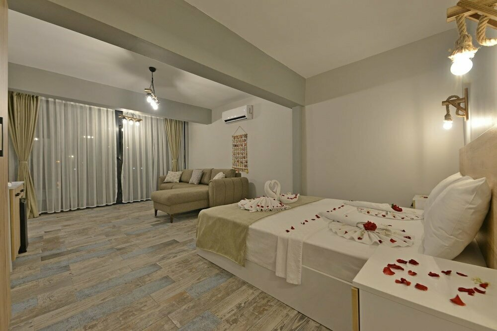
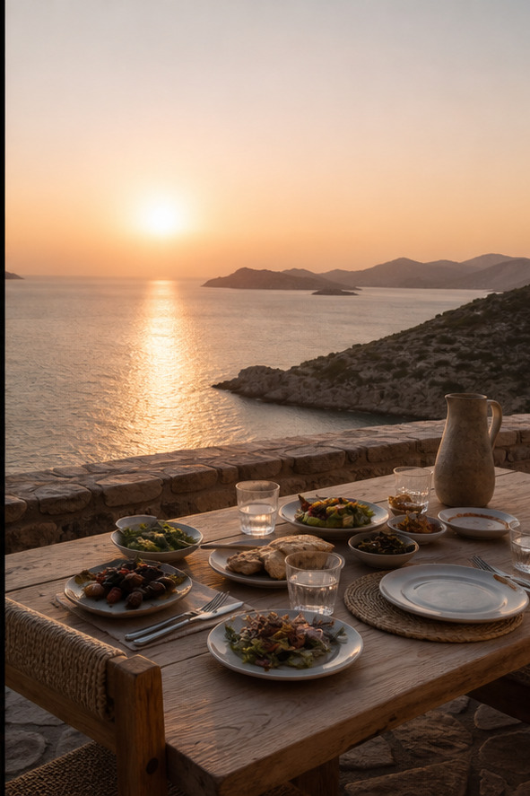

Antik Trakheia Yolu No:3, 48710 Bozburun, Marmaris / MuğlaYarımadanın taş hafızası
Taş duvarların gölgesinden
koylara açılın.
Trakheia’da doğal taş süit, kayalık kıyı ve Antik Trakheia Yolu yarımadanın uzun yazlarına eşlik eder.
Antik Karia Taş Süiti’ı gör ↓DOĞAL TAŞ · KAYALIK KIYI
Taşın hafızası
uzun yazlara açılır.
Doğal taş mimari, kayalık kıyı terası ve yarımadanın ışığı; Trakheia’da konaklama doğayla aynı çizgide ilerler.

Antik Karia Taş Süiti52 m² taş süit · panoramik deniz
Antik Karia Taş Süiti
52 m²’lik süit; doğal taş detaylar, deniz panoraması, taş şömine, king yatak, Nespresso ve yağmur duşu.
- 01 52 m² doğal taş süit
- 02 Panoramik deniz ve taş şömine
- 03 Antik Trakheia yoluna yakınlık

ANTİK TRAKHEIA YOLU · BOZBURUNTRAKHEIA’DA BİR GÜN
Taş duvarların gölgesinden
koylara doğru.
DOĞAL TAŞ · KAYALIK KIYI
Taş, deniz ve
uzun yazlar.
Doğal taş mimari, kayalık kıyı terası ve yarımadanın ışığı; Trakheia’da doğayla aynı çizgide kalınır.
TRAKHEIA’DA BİR GÜN
Yarımadadan gelen sofra
Kıyı ürünleri ve yerel tatlarla hazırlanan yalın akşam; denizin sesini bastırmadan, açık havada tamamlanır.
İLETİŞİM & KONUM
Trakheia Bozburun
DOĞAL TAŞ · KAYALIK KIYI · BOZBURUNDoğal taş mimari, kayalık kıyı terası ve yarımadanın ışığı; Trakheia’da doğayla aynı çizgide kalınır.
Doğal taş teras iskelesi, otopark ve yarımada transferi